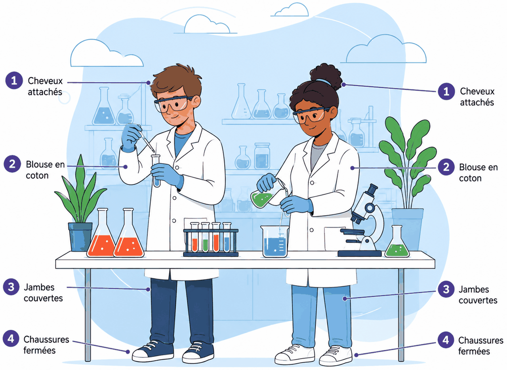

La plupart des produits d'une salle de seconde sont bénins : du sel, du sucre, de l'eau salée, un peu d'acide dilué. Cet outil n'est pas là pour te faire peur — il est là pour que tu saches, sans avoir à réfléchir, comment t'habiller, ce que dit une étiquette, et quoi faire dans les trois secondes qui suivent un accident.
Arriver en TP correctement équipé, lire l'étiquette d'un flacon avant d'y toucher, tenir sa paillasse pendant la manipulation, la rendre propre après — et savoir quoi faire, tout de suite, si quelque chose se passe mal.
Ces règles se décident chez toi, le matin : arrivé devant la salle, il est trop tard. Aucune ne relève du confort — chacune répond à un accident précis.

Les lunettes de protection et les gants ne sont pas systématiques : ils se portent quand le professeur le demande, selon le produit manipulé. La consigne arrive au début de la séance — c'est le premier moment où l'on écoute.
Avant de toucher un flacon, on lit son étiquette en entier. Le professeur l'a fait en amont, mais c'est à toi de te familiariser avec ces symboles : tu les retrouveras sur les produits ménagers de chez toi, exactement les mêmes.
Ce que le produit fait tout seul : il explose, il brûle, il attaque la matière.
Ce que le produit fait à toi, tout de suite ou beaucoup plus tard.
Ce que le produit fait ailleurs, une fois versé dans l'évier.
| Pictogramme | Ce qu'il annonce |
|---|---|
Elles se lisent en une minute et servent toute l'année. Chacune est écrite à l'infinitif : c'est un geste, pas une idée.
Cette paillasse porte six erreurs, une par règle. Clique sur chacune pour la marquer : la liste se coche en dessous.
Disons-le franchement : les produits d'une salle de seconde sont, pour l'essentiel, bénins. Cette étape n'existe pas pour te faire peur — elle existe parce qu'un réflexe se prépare avant. Le jour où quelque chose arrive, on n'a pas le temps de réfléchir, et personne ne relit une fiche.
Et la raison pour laquelle on le fait vraiment : signaler un incident n'est jamais une faute — le cacher en est une. Personne n'a jamais eu d'ennuis pour avoir prévenu trop tôt.
Repérer ces cinq équipements en entrant dans la salle, à la première séance de l'année. Cinq secondes, une fois — et le jour où ça sert, tu ne les cherches pas.
Cinq exercices : trois étiquettes à lire, une paillasse à corriger, un mélange à juger, quatre incidents à trancher, et un bilan de huit questions.
Exercice 1
Voici trois flacons tels qu'ils sont posés sur la paillasse. Pour chacun, lis les pictogrammes, puis réponds aux trois questions du tableau.
| Flacon | Le danger principal | Le geste qui devient interdit |
|---|---|---|
| A · éthanol | ||
| B · hydroxyde de sodium | ||
| C · sulfate de cuivre |
✏️ Cherche d'abord sur ta feuille, puis compare.
A · éthanol. Deux pictogrammes, mais un seul commande le geste : la flamme. « Liquide et vapeurs très inflammables » — ce sont les vapeurs qui prennent feu, et elles descendent le long de la paillasse. On ne l'approche donc jamais d'un bec allumé, et on le chauffe au bain-marie ou au chauffe-ballon, jamais à la flamme nue. Le point d'exclamation ajoute l'irritation des yeux : lunettes si le professeur le demande.
B · hydroxyde de sodium. Un seul pictogramme, et il suffit : corrosif. Les mentions disent les deux versants du même symbole — il brûle la peau et les yeux (danger pour la santé) et il attaque les métaux (danger physique). C'est exactement le pictogramme qui figure deux fois dans l'étape 1.2. Manipulation avec lunettes et gants, sans exception.
C · sulfate de cuivre. Le point d'exclamation dit l'irritation, mais c'est le second pictogramme qui décide du geste de fin de séance : « très toxique pour les organismes aquatiques ». Le reste ne va pas à l'évier — il va au bac de récupération. C'est le lien direct avec l'étape 1.4.
Le contrôle, à faire à chaque fois. Un flacon peut porter plusieurs pictogrammes, et ce n'est pas le plus impressionnant qui commande : c'est celui qui correspond à ce que tu vas faire. Tu chauffes ? Regarde la flamme. Tu verses ? Regarde le corrosif. Tu jettes ? Regarde l'environnement.
Exercice 2
Une autre paillasse, en pleine séance. Elle porte huit erreurs — deux de plus que celle de l'étape 1.3, et elles ne sont pas les mêmes. Clique chacune, puis compte.
✏️ Cherche d'abord sur ta feuille, puis compare.
1 · le verre cassé ramassé à main nue. Les sept autres erreurs ne menacent que celui qui les commet, et sur le moment. Celle-ci a une suite : si les morceaux partent à la poubelle ordinaire, c'est la personne qui videra le sac qui se coupera — quelqu'un qui n'était pas là, qui n'a rien manipulé, et qui n'a aucun moyen de savoir. C'est pour cela que le conteneur à verre n'est pas un détail de tri.
2 · le reste versé dans l'évier. Le sulfate de cuivre de l'exercice 1 est « très toxique pour les organismes aquatiques ». Rien ne se passe dans la salle, rien ne se voit : l'effet est ailleurs et plus tard. C'est exactement ce que dit le neuvième pictogramme, et c'est la raison d'être des bacs de récupération.
Ce que l'exercice cherche à installer. Les huit erreurs ne se valent pas. Certaines se rattrapent en une seconde (fermer sa blouse), d'autres ont des conséquences qu'on ne verra jamais. Savoir les classer, c'est déjà savoir lesquelles ne se négocient pas.
Exercice 3
Sur la paillasse, deux flacons. Le premier porte le pictogramme comburant, le second le pictogramme inflammable. Un camarade propose de verser l'un dans l'autre « pour voir ».
✏️ Cherche d'abord sur ta feuille, puis compare.
Non, et la réponse ne dépend ni de la quantité, ni des gants, ni de la hotte.
La raison est écrite sur l'étiquette. La mention du comburant dit exactement ceci : « peut provoquer ou aggraver un incendie », et « peut provoquer une explosion en présence de produits inflammables ». C'est le seul des neuf pictogrammes qui parle explicitement d'un autre produit — il ne décrit pas un danger du flacon tout seul, il décrit une rencontre.
Ce qu'il faut en retenir de général. Chacun de ces deux flacons est manipulable sans drame : l'un dans son coin, l'autre dans le sien. Le danger n'est dans aucun des deux — il est dans le mélange. Aucun pictogramme ne peut donc te dire, à lui seul, si deux produits vont ensemble.
D'où la règle, et elle est simple : on ne mélange que ce que le protocole demande. Ce n'est pas un manque de curiosité — c'est que la question « que se passe-t-il si ? » se pose au professeur, qui connaît la réponse, et pas au flacon.
Exercice 4
Quatre scènes. Pour chacune, choisis le premier geste — celui que tu fais avant tous les autres.
| La scène | Ton premier geste |
|---|---|
| 1. Ton voisin a reçu une goutte sur l'avant-bras. Il dit que ça ne pique presque pas. | |
| 2. Tu fais tomber un flacon, qui se brise. Le produit se répand au sol. | |
| 3. Le tube que tu chauffes projette une goutte vers ton visage. Rien n'a touché tes yeux. | |
| 4. Tu as fait une erreur dans le protocole : tu as versé le mauvais produit dans le bécher. |
✏️ Cherche d'abord sur ta feuille, puis compare.
1 · rincer à l'eau, et prévenir. « Ça ne pique presque pas » n'est pas une information : certains produits ne se signalent qu'au bout de plusieurs minutes, et le temps perdu ne se rattrape pas. Rinçage abondant, 15 minutes, pendant qu'on prévient.
2 · s'écarter et prévenir, sans rien toucher. Deux dangers se superposent — du verre et un produit répandu, dont tu ne sais pas s'il faut l'éponger. Le point de l'étape 1.5 s'applique : ne pas éponger avant d'avoir demandé. Ramasser les morceaux, c'est ajouter une coupure au problème.
3 · prévenir quand même. C'est la scène la plus utile des quatre, parce que la tentation de ne rien dire y est maximale : il ne s'est rien passé. Mais le professeur a besoin de savoir qu'un tube projette — le tien, et donc peut-être les cinq autres du même montage. Signaler n'est jamais une faute.
4 · arrêter et le dire. Ici, aucune blessure : juste une erreur, et l'envie très humaine de la rattraper seul. C'est exactement ce qu'il ne faut pas faire — tu ne sais pas ce que donne le mélange que tu viens de créer, et « ajouter le bon produit » par-dessus le mauvais est un mélange non prévu, donc l'exercice 3.
Ce que les quatre ont en commun. Dans deux cas sur quatre, la bonne réponse est prévenir et ne rien faire d'autre. C'est contre-intuitif : on a l'impression de ne pas agir. Mais réparer seul est précisément ce qui transforme un incident en accident.
Exercice 5
Huit questions sur l'ensemble de l'outil. Si l'une te fait hésiter, l'étape correspondante est juste au-dessus — c'est fait pour.